このチュートリアルでは、サンプルとして、AWS EC2のOSログをエージェント経由で収集するための構成手順をご紹介します。同様の手順でオンプレミスのホストからログを取集する構成も可能です。
なお、チュートリアルの内容はOCIドキュメントをベースとしているため、記事内容や画面イメージが最新のものと異なる場合は、以下のOCIドキュメントをご確認ください。
ホストからの継続的なログ収集の設定
所要時間 : 30分
前提条件 :
・AWS EC2が作成されていること
このチュートリアルでは、管理エージェントでサポートされているUbuntu 20.04のイメージを使用します。EC2からOCIへHTTPSでアクセス可能なネットワーク構成を設定してください。
・Javaがインストールされていること
管理エージェントを動作させるにはJDK8以降が必要です。
Javaが未導入であれば、JDKをインストールし、JAVA_HOMEを設定してください。
・Logging Analyticsが有効化されていること
このチュートリアルでは、オンボーディング機能を使用してポリシーやLogging Analyticsのリソースが作成済みであることを前提としています。
オンボーディング機能についてはこちらの記事を参照ください。
ポリシーやリソースの作成はマニュアルで設定しても問題ありません。
マニュアルで設定する場合は以下のドキュメントを参照ください。
前提条件のIAMポリシー
管理エージェントを使用した継続的なログ収集の許可
このチュートリアルでは管理者権限を持つユーザーを前提としています。
ユーザーにアクセス制御を設定する場合は以下のドキュメントを参照ください。
ログ・アナリティクスのIAMポリシー・カタログ
1. 管理エージェントのダウンロード
OCIコンソールのホーム画面左上のメニューから「監視および管理」を選択し、
「管理エージェント」の「ダウンロードとキー」をクリックします。
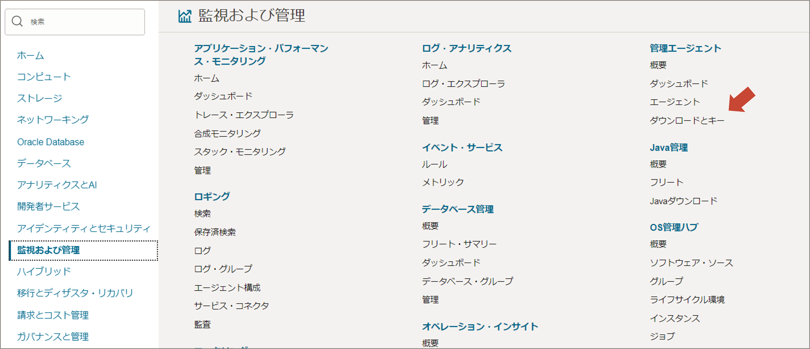
「LINUXのエージェント (x86_64)」のZIPファイルをダウンロードします。 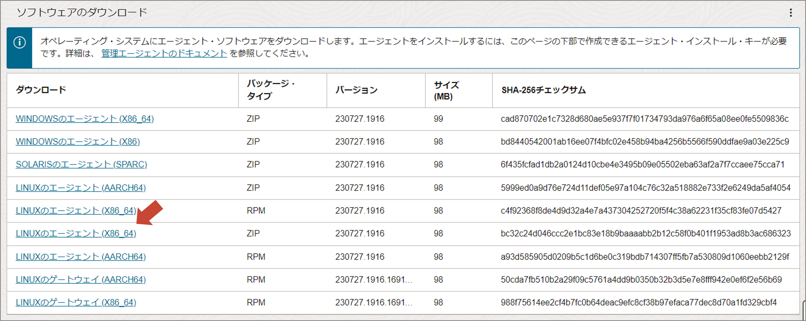
ダウンロードのぺージを下にスクロールすると、オンボーディング機能により作成されたキーが表示されていますので、「キーをクリップボードにコピー」を選択し、メモしておきます。これは後ほどレスポンスファイルの作成で使用します。
2. レスポンスファイルの作成
インストールの際に管理エージェントが参照するレスポンスファイル（クレデンシャル情報などのパラメータを記述したもの）を作成します。
$ vi /tmp/input.rsp
補足：
レスポンスファイルは、その他ユーザーからの読み取りが許可されている必要があります。管理エージェントがインストールされると mgmt_agent というユーザーが自動作成され、レスポンスファイルを参照するためです。なお、レスポンスファイルを配置するディレクトリには、その他ユーザーからの読み取り/実行権限が必要です。このチュートリアルでは、例として/tmp に配置しています。
レスポンスファイルには以下のパラメータを記載します。
managementAgentInstallKey = コピーしておいたキーの値（必須）
CredentialWalletPassword = 任意のパスワード（必須）
Service.plugin.logan.download=true 使用するプラグイン（オプション）
パラメータ記載例 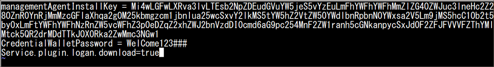
補足：
パスワードには半角英数の大文字小文字、記号をそれぞれ少なくとも1つ使用する必要があります。
プラグインは管理エージェントインストール後、コンソールから有効化することもできます。
レスポンスファイル作成に関する詳細は以下のドキュメントを参照ください。
レスポンス・ファイルの構成
3. 管理エージェントのインストール
ダウンロードしたエージェントファイルを任意のディレクトリに配置します。
ここでは /home/ubuntu へ配置します。
エージェントファイルを解凍します。
以下は mgmtagentfile という新規フォルダを指定して解凍しているコマンド例です。
unzip -d mgmtagentfile oracle.mgmt_agent.230727.1916.Linux-x86_64.zip
つぎに、解凍先のディレクトリ（mgmtagentfile）に移動して、以下を実行します。
sudo ./installer.sh /tmp/input.rsp
メッセージが流れ、末尾に以下のような表示が出ればインストール成功です。
～
Starting agent...
Agent started successfully
Agent setup completed and the agent is running.
In the future agent can be started by directly running: sudo systemctl start mgmt_agent
Please make sure that you delete <user_home_directory>/input.rsp or store it in secure location.
OCIコンソールのホーム画面左上のメニューから「監視および管理」を選択し、
「管理エージェント」の「エージェント」をクリックします。
コンパートメント「Management-Agents」で、EC2に導入した管理エージェントが表示されていることを確認します。
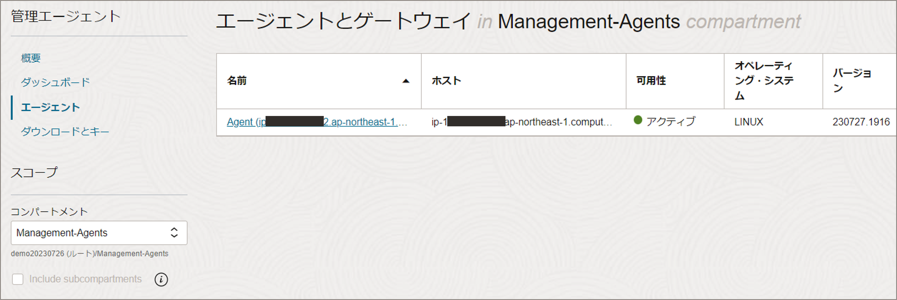
補足：
「Management-Agents」は、オンボーディング機能を使用すると自動作成される管理エージェントを管理するための専用コンパートメントです。
4. ログ・グループの作成
OCIコンソールのメニューから「監視および管理」を選択し、
「Logging Analytics」の「管理」をクリックします。
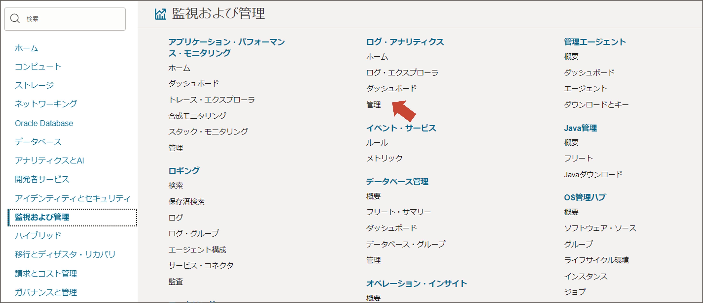
「ログ・グループ」をクリックし、詳細画面へ進みます。 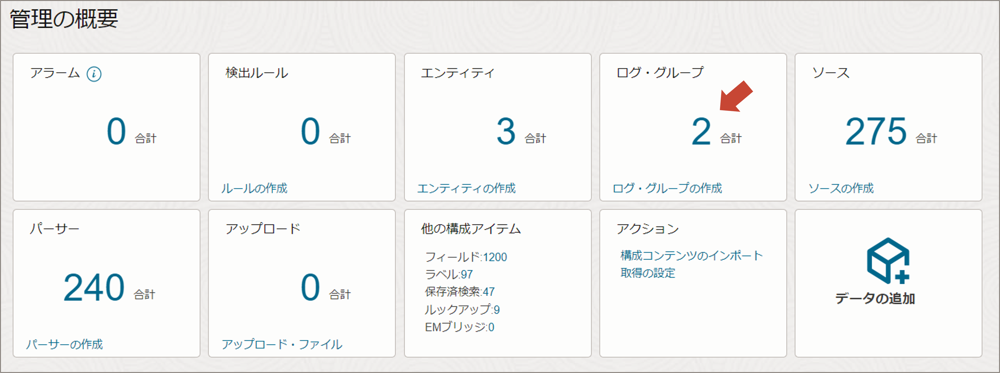
コンパートメント「Management-Agents」を選択し、「ログ・グループの作成」をクリックします。任意で名前を記入し「作成」をクリックします。ここでは ec2_log とします。 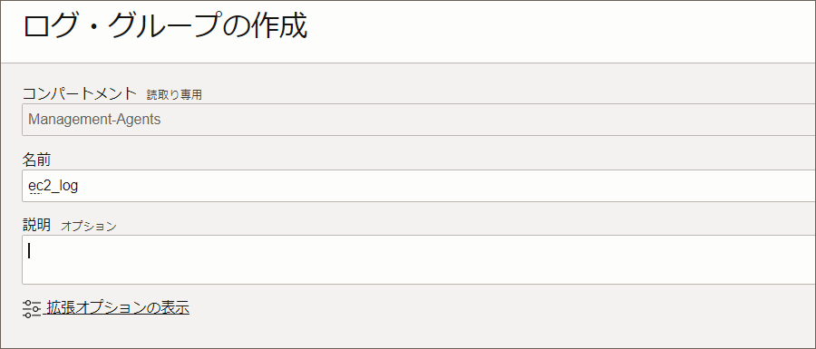
5. エンティティとログソースを関連付ける
OCIコンソールのメニューから「監視および管理」を選択し、
「Logging Analytics」の「管理」をクリックします。
「エンティティ」をクリックし、詳細画面へ進みます。
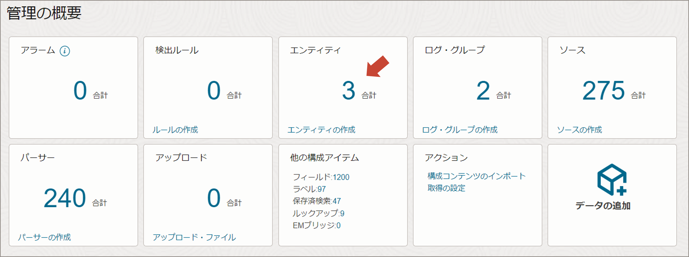
コンパートメント「Management-Agents」を選択します。
EC2のエンティティが作成されていることを確認します。
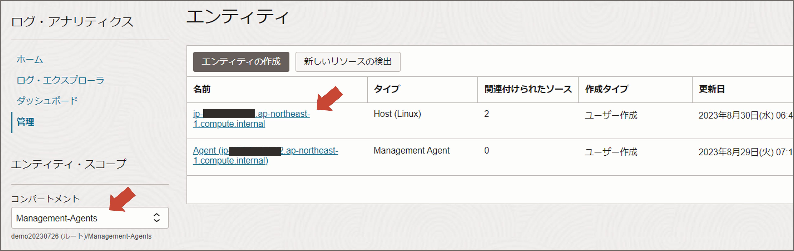
Logging Analyticsの管理画面で「データの追加」をクリックします。 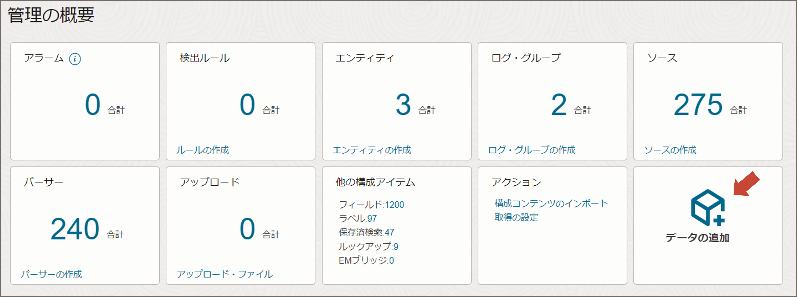
「Linuxコア・ログ」をクリックします。 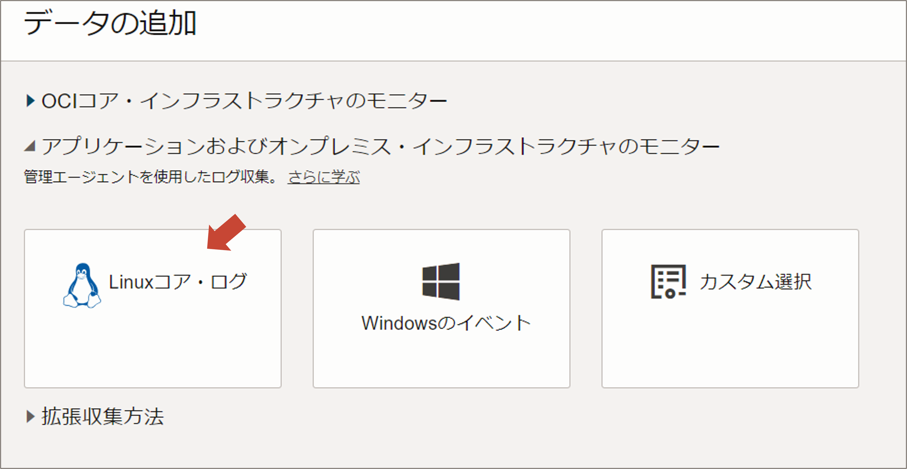
エンティティの選択画面でEC2が表示されているのでチェックを入れて次へ進みます。 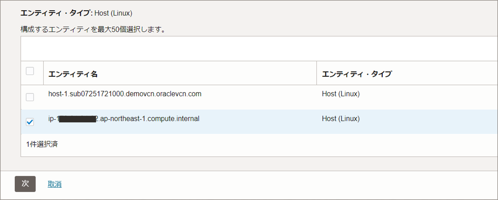
ログ・ソース一覧が表示されますので、必要なものにチェックを入れます。
ここでは Linux Syslog、Linux Secure Log にチェックを入れます。

ログ・グループを選択します。コンパートメント「Management-Agents」で予め作成した ec2_log を指定して「ログ収集の検証と構成」をクリックします。 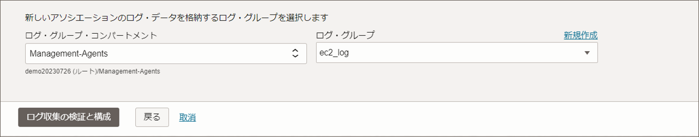
エンティティとログソースの関連付けが成功したことを確認し、
「ログ・エクスプローラに移動」をクリックします。
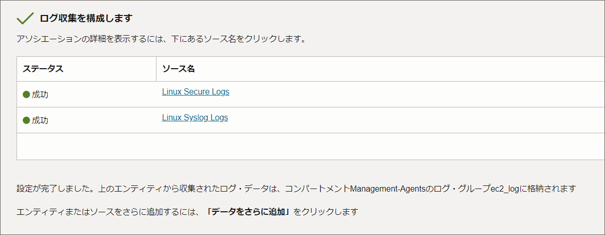
数分待つと、ログが表示されるようになります。
Linux Secure Logs をクリックし、ログの詳細へドリルダウンしてみます。
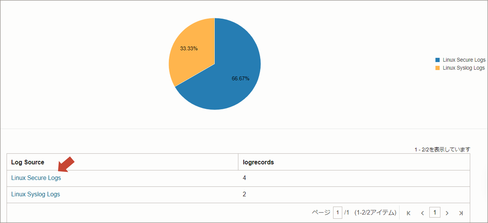
ログの内容が解析され、フィールドで見やすく表示されていることが確認できます。

以上で、設定は終了です。